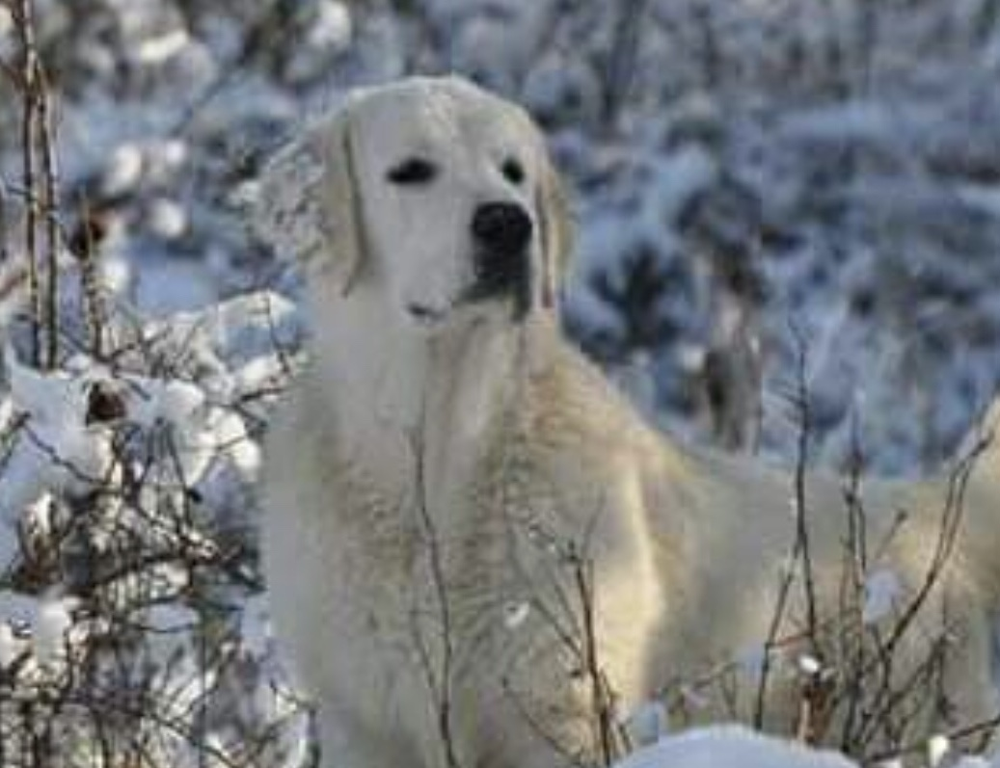
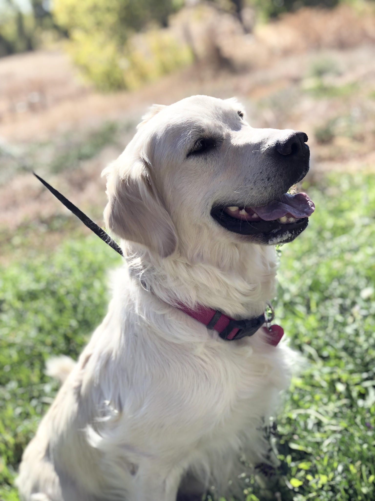
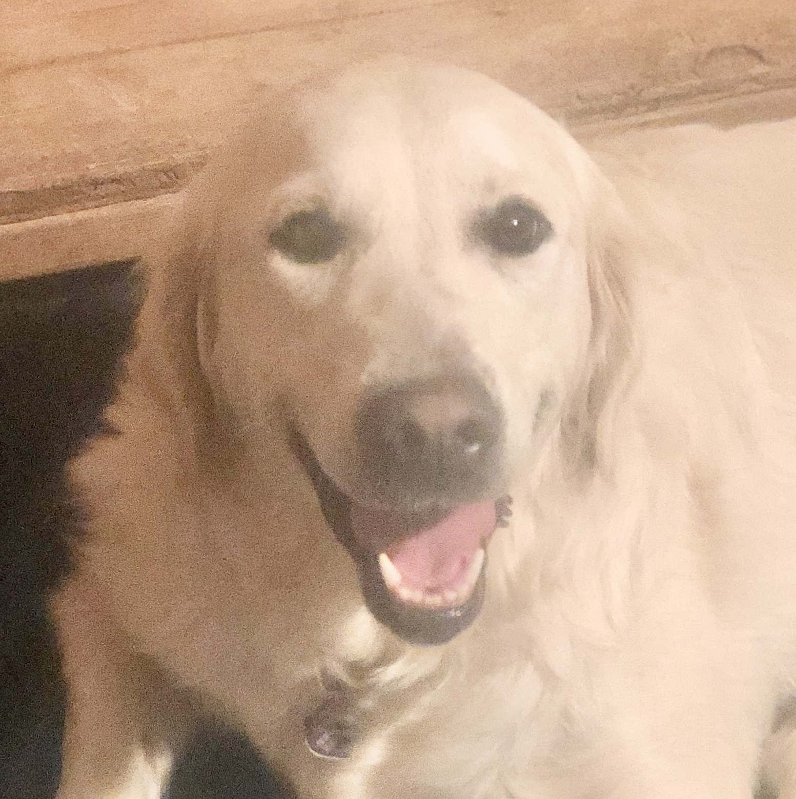
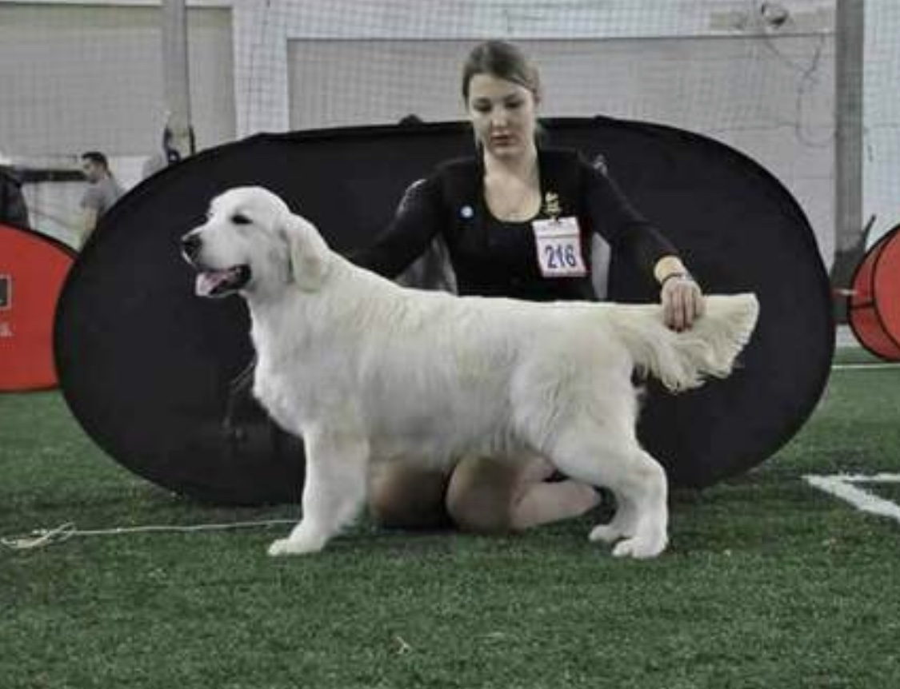
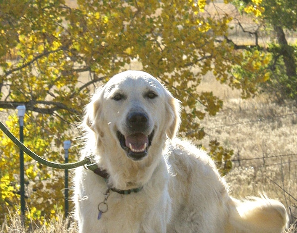
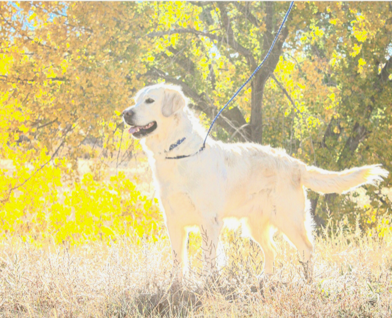
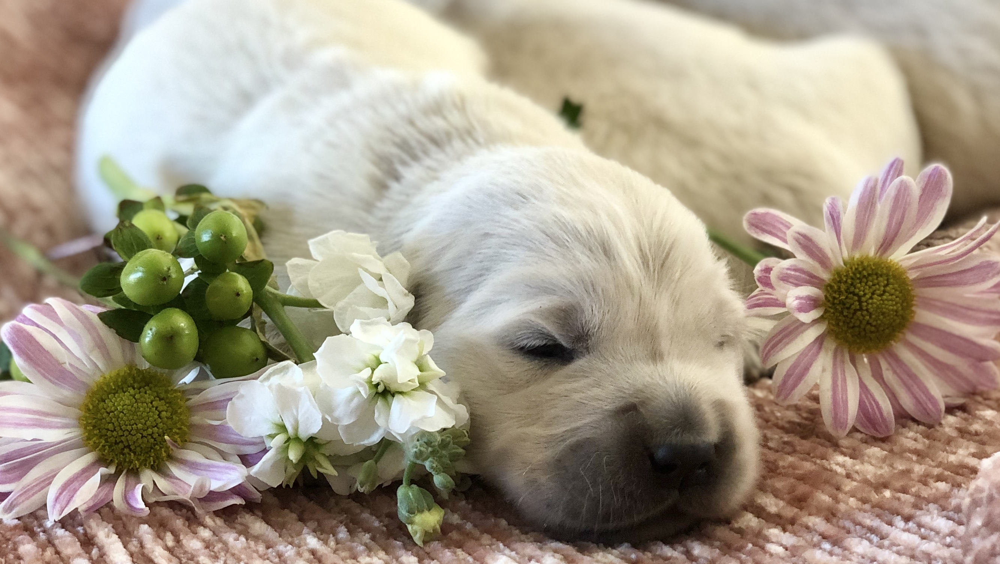
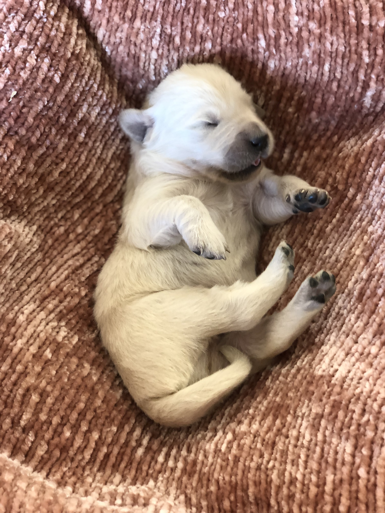

Here at Brightside, our goal is simple but lofty! To raise the “Cream of the Creams”: ideal family members, with a sweet, trainable, therapy type temperament, correct “European standard” conformation, and thorough health and genetic testing to help them live their best life with their forever families!
Our Golden journey began in 2015 with our first Goldie, Bruce. We absolutely fell in love with this wonderful breed. It is no wonder they inspire so much loyalty! With their intelligence, loyalty, personality and that special attunement to people…Goldens are just special!
It was a good time in our family’s life to allow a lifelong obsession with raising dogs in the country to be accomplished, and raising puppies for us is now a total family endeavor. We are there with them from their first breath, to the day we place them in the arms of their forever families.
When I visited Europe, and saw the Goldens there, which are slightly blockier, stockier, and often lighter (the European standard allows for a cream colored dog) than the American bred dogs, I decided that was the direction I wanted to go.
We have learned a lot along the way and we continue to research! We undertake several different protocols to help our pups become ideal family members. We socialize our pups with our extended family and friends, and practice Early Neurological Stimulation, (which has many benefits: a more graduated stress response in your adult dog, improved trainability, and a stronger immune system), as well as starting them on potty training, and name recall.
Our parents have all their health clearances (hips, elbows, eyes and heart) and genetic testing done for the common genetic diseases which affect Goldens, so pups are guaranteed clear/unaffected, including for both ICT 1 & 2 (the recently discovered, nastier version of ICT in Goldens.)
We offer a health guarantee and pups go home throughly vet checked, with first shots and de-worming done.
Our Spring 2023 pups are here! Both of our Mamas had a litter just one day apart at the beginning of April. Pups are just opening their eyes…they will be ready for puppy visit/selection beginning May 5, and will be ready to go home the weekend of May 26th.